| |
| |
Project 1 | Project 2 |Project 3 (Team Project) |
Paper Presentation | Final Project
 | TUTORIALS |
Eggplant
Not difficult. Here I just played a little bit with modifiers and the UV Tool.
|
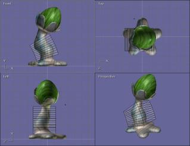 |
| 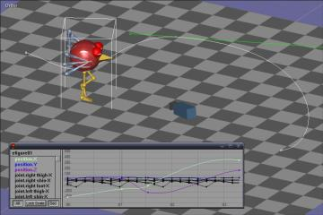 |
Bird
The actual bird modeling was quite simple. I got some more difficulty in doing the walk cycle
right, but I ended up with something almost working anyway. In this tutorial I also tried the
Graph editor for the first time. Didn't think I would actually end up using this in one of
the scenes of my animation.
|
| PROJECT |
The Story
My silly animation is about Mike, a little puppet who... finds a sketch of himself
that I did while working on the animation :)
After a little bit of surprise, Mike tries to modify the sketch and finds out that
(quite obviously...) what changes on the sketch changes also on him. At his own expense,
Mike will discover that things work also the other way around...
|
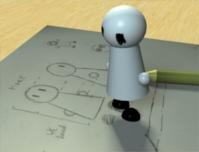 |
| 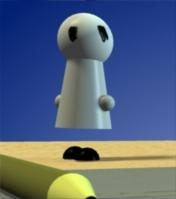 |
About Mike
Mike is a really simple character. The face has just the eyes on it and I chose to draw
no arms and legs at all, but just the feet and hands. My main objective was to try and make
it as expressive as possible even without this stuff. |
Making Of
| 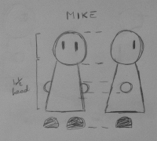 |
Sketches
The first thing I did (apart from having the idea of what the video would be about :P) was to
draw some sketches of my main character. I knew that one of those sketches was going to be on the
video itself, so I tried to do something that was useful for me to understand how to build Mike
but looked also somewhat cool. |
 |
The Storyboard
I then started subdividing the whole video in a set of different scenes. Each of those scene was going
to correspond to an actual Anim8or scene. I did this mainly to simplify further work, to organize things better
and also to be able to potentially split up the rendering to different machines.
After dividing the scenes I actually started drawing brief sketches of them. The resulting storyboard was useful to
extabilish exactly in wich position I would place the camera and the objects, along with the sequence and (almost) exact
timing of animations. |
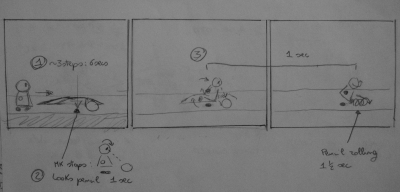 |
Creating Objects
The objects I needed for my animations were few and really simple: A table, a piece of paper textured with an
actual photo of one of my sketches, a pencil and, well, Mike :)
Object creation was straightforward. For the pencil I just used the lathe tool, and a simple 1D texture with the right
colors. |
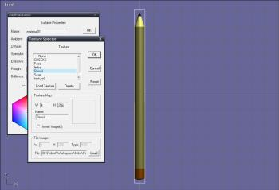 |
| 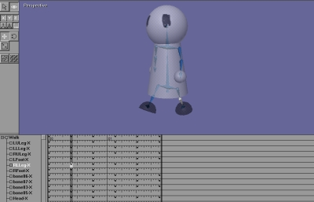 |
Creating Mike
Drawing Mike was not that difficult either. Simple shapes, and a standard humanoid skeleton. The only particular thing
I had to do, was to add another bone to the head section of Mike to let the head sphere rotate on itself. At this point
I also created a simple walk cycle for Mike, as I knew I would have at least a pair of scenes with him going around.
|
The Set
All my animation is taking place on a table, but the animation itself is splitted in a certain number of scenes (11). To
maintain consistency among different scenes (for object positions, lighting and so on) I then decided to create a 'base scene'.
That I could reuse as a starting point for each scene I was going to create. I saved this special set apart from my project, and
imported it every time I was beginning another scene.
|
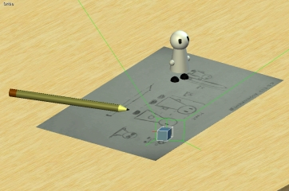 |
Animation
And then came the difficult part... animating stuff :)
I was lucky with certain parts, as they came out as I wanted them the first time. Some other simply ended up in a mess of
keyframes and I had to do them from scratch... again and again. One of the most difficult (and probably worse) scenes I did
is the one with Mike walking towards the camera with the pencil in his hands, and then drawing some stuff on the paper. I tried
to give the sensation of him going around with an object twice as big as him by making Mike lean backwards and walk in a different way.
When Mike had to modify the sketch, I tried to make his hands moving in a correct way, but I just wasn't able to do it as I wanted it to be.
|
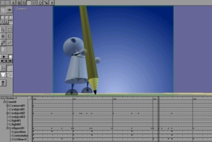 |
Pre-Production Rendering And Editing
When I got (almost) every scene ready, I did a fast rendering of each one of them with a really low resolution (160x120).
I then used the generated videos to do some experiments with the editing. I looked around for a soundtrack, and when I found
one that I liked I had to edit it to be long enough for my animation. The editing wasn't that good, but it quite worked.
When I got the pre-production video ready I just discovered that some things has to be modified to be more in sync with the music,
so I was able to do it before the actual final rendering was done.
|
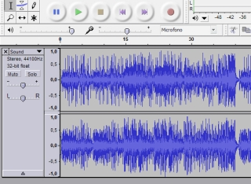 |
| 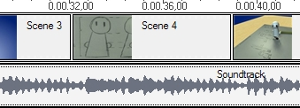 |
Final Rendering And Editing
Nothing much to say about it. It just took a LOOOOOOOONG time. One way of reducing rendering time was to use the Monte Carlo method for
soft shadow computation. Resulting shadows are not so good, but they need almost half of the computing time required for standard
soft shadowing.
After the videos of all the scenes were ready, I just did the editing as I did it for the pre-production version. And voila, the video
is ready :)
|
The End Of All Things
Download it from HERE
SIDE NOTE: After the final rendering was done, I noticed that in one of the scenes there was a little incongruence...
I had no time to render the scene again so I just left the thing where it was. If you like to, try to find it :)
Michele Santoro
How did you do the zooming on Mike's face without cutting out his head? Did
you create a bigger object or did you change some camera settings?
Answer
It wasn't a bigger model, I just made Mike walk towards the camera: To avoid having
his head clipped off when it was too near to the camera, I modified the camera
parameters in order to have a very close near clipping plane.
|
|
|
| |
|